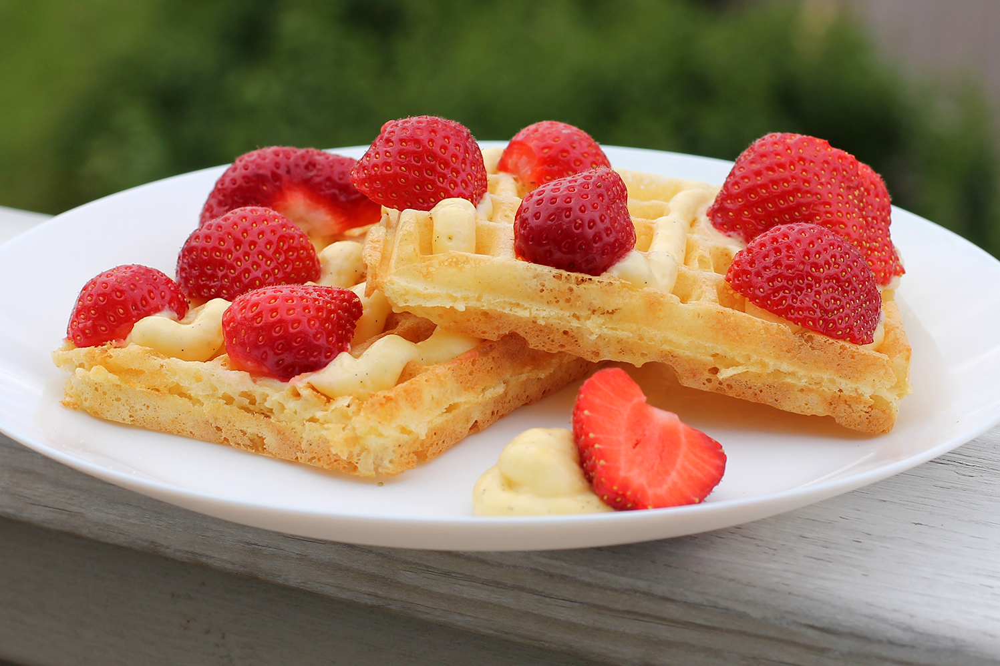

Crème Suisse
A light and fluffy cream created by mixing together custard and whipped cream. It can be used to serve with waffles or pancakes, as a cake or tart filling or to fill doughnuts.
metadata
Created on 2018-03-25 Last updated on 2018-12-18
Adapted from Brusselse wafels met crème suisse by Roger van Damme @ njam! (2018-12-18)
Ingredients
| 480 | ml | whole milk | The fat in the milk is important to thicken the custard. | |
| 300 | ml | heavy cream | ||
| 100 | g | sugar | ||
| 40 | g | cornstarch | ||
| 5 | sheets | gelatin | ||
| 4 | egg yolks | |||
| 2 | tsp | vanilla essence | ||
| 1 | vanilla bean | Vanilla bean gives a much better taste than other vanilla products. If you really can't use it, consider using vanilla essence. |
Scaling
Timeline
Directions
- 20 ml whole milk | The fat in the milk is important to thicken the custard.
- 40 g cornstarch
mix cornstarch and milk:
In a small bowl, stir together the cornstarch with a little splash of milk. It should turn into a smooth paste. Add a little more milk to make it fairly liquid.
- 2 tsp vanilla essence
- 4 egg yolks
- 20 g sugar
add vanilla essence:
Add the vanilla essence, yolks and 20g of sugar and whisk until frothy and well combined.
- 460 ml whole milk
- 1 vanilla bean | Vanilla bean gives a much better taste than other vanilla products. If you really can't use it, consider using vanilla essence.
- 80 g sugar
warm milk:
Combine the milk, the vanilla bean and 80g of sugar in a small saucepan. Over low heat, gently heat the milk mixture until scalding.
combine the milk mixtures:
Take the milk off the heat and drizzle it into the cornstarch and egg mixture, whisking constantly. Pour the mixture back into the saucepan and gently heat over medium-high heat, stirring continuously with a rubber spatula, until the mixture thickens into pastry cream.
cool mixture in bowl:
Transfer the hot pastry cream to a heatproof bowl, press a piece of plastic wrap directly onto the surface of the pastry cream to prevent a skin from forming and leave to cool to room temperature.
- 5 sheets gelatin
soak gelatin:
Soak the gelatin sheets in cold water for 10 minutes.
- 30 ml heavy cream
heat a little cream:
Use a little of the heavy cream to cover the bottom of a small saucepan. Gently heat the splash of cream until it is hot to the touch.
mix cream and gelatin:
Take it off the heat. Squeeze water out of the gelatin. Add the gelatin to the cream. Put the mixture on low heat and stir until the gelatin is completely dissolved. Take it off the heat.
- 270 ml heavy cream
whip heavy cream:
Pour the remaining cream into a bowl. Add a little bit of sugar, and whip the mixture to form soft peaks.
mix everything:
Mix together the pastry cream and the gelatin-cream mixture. Gently fold in the whipped cream using a rubber spatula.
cool:
Place the mixture into the fridge and let it cool for at least 2 hours.